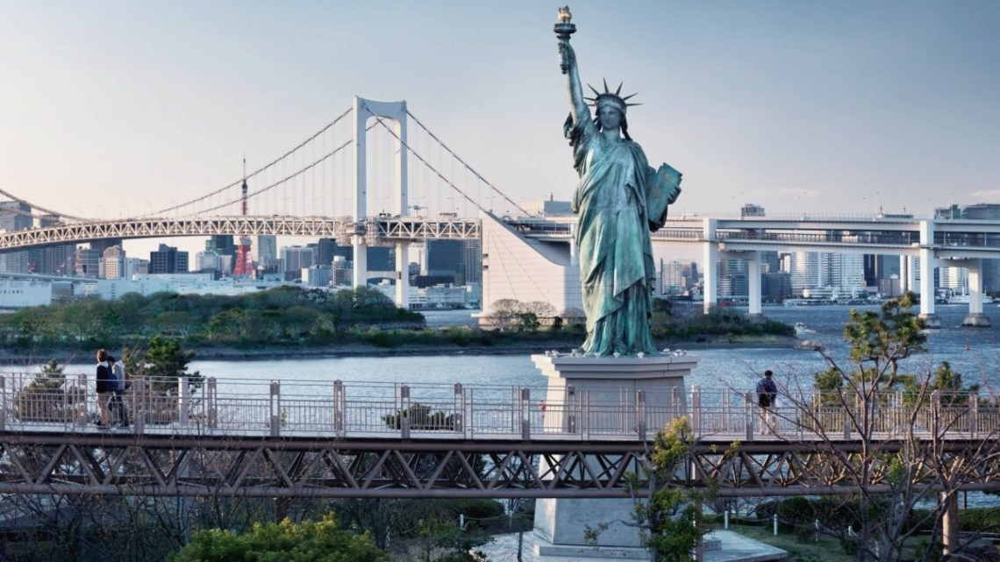
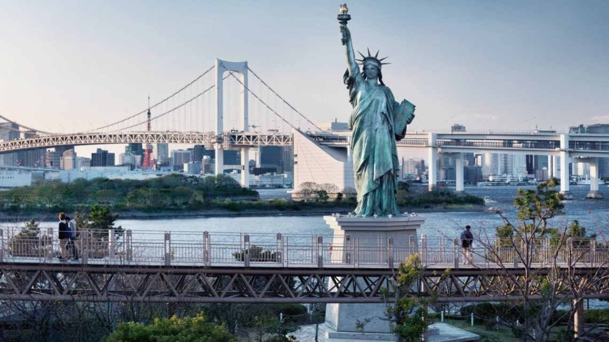

Мостът свързва бизнес района Минато-ку с изкуствения остров Одайба. Разполага с две нива, през които минава магистралата, моно релсата и пътеката. Мостът на дъгата в Токио достига около 918 метра дължина и 126 метра височина. На върховете на пилоните, подкрепящи изграждането на моста, има платформи за наблюдение, от които можете да се наблюдава залива. Той изглежда особено красива при залез слънце и призори. Мостът е строен 5 години. Открит е през 1993 година.
Защо Мостът на дъгата е наречен така? Всеки, който не го е виждал през нощта би се зачудил. Денем мостът е оцветен в бял цвят, но магията се случва през нощта, когато той, чрез светлини, е оцветен в ярки и спиращи дъха цветове. Гледката е удивителна!
Японците вярват, че има митично място на самият край на небето. Нарича се още "Мостът на дъгата". Легендата казва, че след земния живот има нещо друго. Когато животът на един домашен любимец свършва, пътуване през дъгата мост го очаква. Преминавайки през него, тя ще попадне върху вечнозелени ливади, където ще се весели завинаги с други животни, докато един ден не се чувства, че любимият му господар дойде при него. Естествено това не може да бъде потвърдено, но не ли хубаво човек да си мечтае, че дори след края на живота го чака нещо хубаво.
Интересен факт е, че близо до ослепителният мост е построено копие на световно известната статуя на свободата. Тя е четири пъти по-малка от оригинала, но на фона на блестящите цветове на дъгата, изглежда много впечатляваща. Статуята е построена през 1998 година и символизира правото на избор и демокрацията.
“Чаках около час, за да видя залеза и включването на светлините на моста, но определено си струваше. “ – споделят хора посетили моста

 
